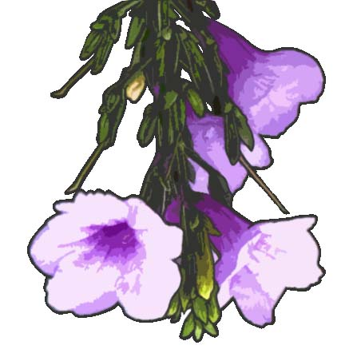

About "How To Grow A Story"- Back to the Story - |
||
| The Idea | I've planted seed for a story and and now we all get to watch it grow. Anyone who wants to get their hands dirty is welcome to help cultivate it. All the ideas from all of our heads are sure to produce one heck of a narrative, and the beauty of the project is that this tale is everyone's tale. No one will be able to guess where it will go. No one will be able to say that it was all their doing. But everyone will get to impact it in some way. And everyone gets to enjoy it. | |
| How It Works | If you just wanna sit back and enjoy the ride, all you have to do is read. The tale is all layed out for you, and you even get some pictures, too, if you're too lazy to imagine them yourself. If a block of text has a Play Button to the right of it, there is a sound bite that goes along with the story. Click it and enjoy. Some will just add a nice ambience while you read, some are sound effects, and some might be bits of dialogue. Of course, once you get to the end, you have the option of continuing the adventure. Type up the next chapter, using HTML tags to format if you want, and hit submit. Attaching your name to your writing is totally optional. | |
| Behind the Scenes | If you're curious, I hand-coded this site using HTML and CSS. The nuts and bolts are made with PHP and AJAX, though. The story itself is stored in an XML file, and a Javascript function loads the story every second, updating it as you read. When you submit your own writing, PHP validates the entry and converts the text to XML, appending it to the story and adding one more chapter for us to read. I've also added a few illustrations along the way to spice things up. They've all been hand drawn, then scanned and digitally painted in Photoshop CS5. Add because that wasn't enough, I've added some sound bites, too. A Javascript function plays MP3 or OGG files, depending on your browser, on the click of the play buttons. | |
|  |